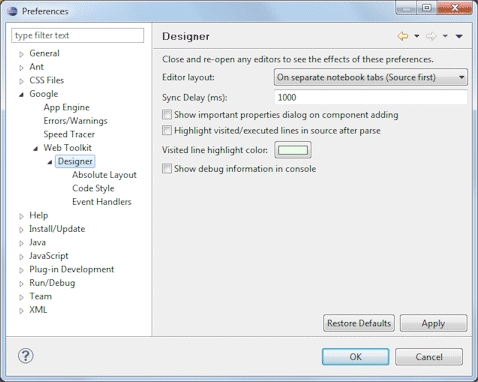

| 
Here is the list of designer preference pages: Editor LayoutThis preference controls the position of the Source View relative to the Design View. By default, they are "on separate notebook tabs" labeled Source and Design (you can select which page is first). Additional options are provided to show the Source View and Design View side by side or one above the other. Sync Delay (ms)When the Source View and Design View are both visible, this preference determines the delay used to synchronize the two panes. If the user types in the Source View, the source will be re-parsed and the Design View will be updated after a period specified by the sync delay. Use "-1" to synchronize only on save. Show important properties dialog on component addingThis preference controls whether the important properties dialog is shown whenever a new widget is created. The important properties dialog provides access to the widget's name, text and icon properties and style settings. Highlight visited/executed lines in source after parseThis preference determines whether the lines that are visited/executed during a parse are highlighted. Visited line highlight colorThis preference determines color is used to highlight visited/executed lines. Show debug information on consoleThis preference controls whether debugging info is written to the Java console window. |